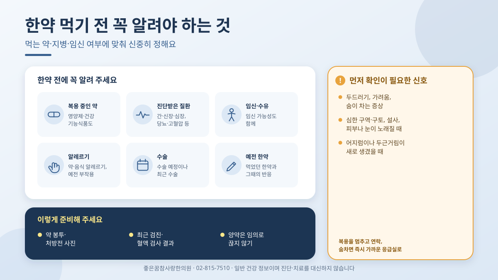

이종호 한의사 감수좋은꿈참사랑한의원 대표원장 (한의사 면허번호 19769)발행 2026-11-26 · 수정 2026-11-27
이 글의 차례
퇴근길에 한약 상자를 받아 들고 집에 옵니다. 묵직한 상자를 식탁에 올려놓고 파우치 하나를 꺼내 보다가, 냉장고 옆 약 바구니에 눈이 갑니다. 아침마다 먹는 혈압약, 속이 쓰릴 때 먹는 위장약, 피곤하다고 챙겨 먹는 비타민과 홍삼 스틱까지.
'아, 홍삼 먹는다는 말은 안 했는데.' 상담 때는 다 말씀드렸다고 생각했는데, 막상 상자를 앞에 두니 빠뜨린 것들이 하나둘 떠오릅니다. 같이 먹어도 되는지, 혈압약은 잠시 쉬어야 하는지, 물어볼 곳은 마땅치 않고 마음만 복잡해지지요.
진료실에서 이런 질문을 자주 받습니다. "영양제도 말씀드려야 하나요?" "한약 먹는 동안 먹던 약은 끊어야 하나요?" 묻기가 쑥스러워 그냥 넘어가는 분도 계십니다. 몸에 좋자고 먹는 약인데 혹시 잘못 먹는 건 아닐까, 걱정이 드는 것이 당연합니다.
먼저 답부터 드리겠습니다. 한약을 드시기 전에는 지금 드시는 약과 영양제·건강기능식품, 간이나 신장 질환을 비롯한 지병, 임신 가능성과 수유 여부, 약이나 음식 알레르기, 예전에 약을 먹고 불편했던 경험을 알려 주세요. 드시던 양약은 한약 때문에 끊지 마시고, 조절이 필요하면 처방한 의사와 상의하는 것이 원칙입니다.
상담 뒤에 빠뜨린 것이 생각났다면 한약을 드시기 전에 전화로 알려 주셔도 됩니다. 그 전화 한 통은 번거로운 일이 아니라, 제게는 꼭 필요한 정보입니다.
왜 미리 알려 주셔야 하나요
같은 병명이라도 사람마다 몸이 다르기 때문에 한약도 달라집니다. 저는 처방을 정할 때 병의 이름만 보지 않고 그 약을 드실 분의 몸을 봅니다. 그 몸에는 지금 드시는 약과 지나온 병력까지 함께 들어 있습니다.
- 지병과 나이, 임신 여부에 따라 맞는 처방이 달라질 수 있습니다.
- 드시는 약이나 영양제와 함께 드셔도 되는지, 겹치는 성분은 없는지 확인해야 합니다.
- 간이나 신장 기능이 떨어져 있으면 더 조심해서 정해야 합니다.
- 예전에 약을 먹고 불편했던 경험은 같은 일을 피하는 단서가 됩니다.
- 수술이나 검사 일정이 잡혀 있으면 복용 시기를 미리 맞춰야 합니다.
한약은 자연에서 얻은 약재로 짓지만 그래도 약입니다. 사람의 상태에 따라 맞지 않을 수도 있어서 드시기 전에 진료와 상담이 필요합니다. 미리 알려 주시는 몇 가지가 그 상담의 바탕이 됩니다.
보약보다 진맥과 상담이 먼저인 까닭
"요즘 기운이 없어서 보약 좀 먹어야겠어요." 진료실에서 정말 자주 듣는 말입니다. 그런데 피로는 잠이 모자라서, 일이 많아서, 잘 못 먹어서, 혹은 빈혈이나 갑상선 같은 질환 때문에 오기도 합니다. 원인이 여러 가지이니 채우기 전에 왜 기운이 떨어졌는지부터 살펴야 합니다.
같은 "피곤해요"에도 사정이 다릅니다. 잠을 못 자서 지친 분, 소화가 안 되어 먹은 것이 힘이 되지 못하는 분, 마음에 걸린 일이 있어 몸이 따라 무거운 분, 오래 앓은 뒤 기운이 바닥난 분이 모두 같은 말을 하십니다. 그래서 저는 녹용이나 공진단도 모든 분께 같은 방식으로 권하지 않습니다.
감기 기운이 있거나 속이 많이 불편한 날이면 그것부터 살피고, 보약 이야기는 다음으로 미루자고 말씀드리기도 합니다. 한의학에서는 몸이 바깥의 나쁜 기운과 싸우고 있을 때 채우는 약을 서두르지 않는 것을 기본으로 여기기 때문입니다.
약을 지으러 오셨는데 빈손으로 돌려보내 드려 서운하실 수도 있습니다. 그래도 지금 몸에 맞지 않는 약을 드리기보다는 그편을 택하겠습니다. 무엇이 문제인지 알아야 무엇을 할지 정할 수 있으니까요.
꼭 알려 주세요
- 복용 중인 약과 영양제, 건강기능식품, 다른 곳에서 받은 한약
- 간이나 신장 질환, 심장 질환, 당뇨, 고혈압 등 진단받은 질환
- 임신 중이거나 임신 가능성이 있는지, 수유 중인지
- 약이나 음식 알레르기, 예전에 약을 먹고 불편했던 경험
- 가까운 수술이나 검사, 긴 여행 예정
혈압약, 당뇨약, 혈액을 묽게 하는 약처럼 꾸준히 드시는 약이 있다면 이름과 드시는 시간을 꼭 알려 주세요. 약 이름이 어렵다면 약 봉투를 가져오시거나 휴대전화로 찍어 오셔도 됩니다.
하루에 드시는 약이 한 움큼인 분도 계십니다. 몸이 약해지면 무엇이라도 더 먹으면 나아질까 싶은 마음이 드는 것을 압니다. 그래도 꼭 필요한 것을 필요한 만큼 드시는 것이 좋습니다. 줄여도 되는지는 혼자 정하지 마시고, 처방한 의사나 약사에게 약을 모두 보여 드리고 상의하세요.
영양제와 건강즙도 빼놓지 말아 주세요. 홍삼이나 녹용이 들어간 제품처럼 한약재와 겹치는 성분이 있을 수 있고, 다른 곳에서 지은 한약과 겹치는 약재가 있는지도 확인해야 합니다. 자주 마시는 차가 있다면 그것도 말씀해 주세요.
간이나 신장 수치에 대해 들은 이야기가 있다면 최근 검진 결과지와 함께 알려 주세요. 처방을 정할 때 간과 신장 상태를 함께 고려하고, 필요하다고 판단되면 혈액 검사 같은 확인을 먼저 안내합니다.
임신 중이거나 임신 가능성이 조금이라도 있다면, 혹은 수유 중이라면 상담을 시작할 때 먼저 말씀해 주세요. 약재마다 이 시기의 안전성을 따로 살펴야 해서, 한약을 지을지와 어떻게 지을지를 더 신중하게 정합니다. 임신을 준비하고 계신 경우도 마찬가지입니다.
예전에 약을 먹고 두드러기가 났거나 속이 크게 불편했던 적이 있다면, 그때 무엇을 먹었고 어떤 증상이었는지 기억나는 대로 알려 주세요. 처방전이나 약 이름이 남아 있으면 큰 도움이 됩니다.
자주 하는 오해, 조금 풀어 드릴게요
"한약은 자연에서 온 거라 누구에게나 괜찮지 않나요?" 자연에서 왔다고 모두에게 맞는 것은 아닙니다. 몸 상태와 함께 드시는 약에 따라 신중하게 정해야 합니다.
"영양제는 약이 아니니까 말 안 해도 되죠?" 성분이 겹치는지 확인하는 데 꼭 필요한 정보입니다. 약이 아니라고 생각해 빠뜨리시는 경우가 의외로 많습니다.
"한약을 먹기 시작하면 양약은 줄여도 되겠죠?" 아닙니다. 혈압약이나 당뇨약처럼 임의로 끊으면 위험한 약이 있습니다. 양약은 처방한 의사와 상의 없이 줄이거나 끊지 않습니다.
"예전에 먹은 한약이 괜찮았으니 이번에도 괜찮겠죠?" 그사이 몸 상태와 드시는 약이 달라졌을 수 있습니다. 그래서 예전에 드셨던 분도 지금 상태를 기준으로 다시 살핍니다.
"한약을 먹으면 간이 나빠진다던데요." 걱정되시는 마음은 이해합니다. 간 질환이 있거나 걱정되신다면 미리 알려 주세요. 처방할 때 간과 신장 상태를 고려하고, 드시는 중에 이상이 있으면 바로 멈추고 연락하시도록 안내합니다.
진료실에서 자주 뵙는 모습
특정한 누구의 이야기가 아니라 한약 상담에서 자주 겹쳐 보이는 모습입니다.
예를 들어 혈압약과 당뇨약을 함께 드시는 어르신이라면, 약 봉투를 가져오시면 드시는 약과 최근 검사 결과를 함께 확인한 뒤 한약을 지을지부터 판단합니다. 드시던 약은 그대로 두고, 한약과 시간 간격을 어떻게 둘지도 같이 정합니다.
예를 들어 피로 때문에 영양제를 여러 개 챙겨 드시는 직장인이라면, 제품 사진을 함께 보며 겹치는 부분은 없는지 먼저 살핍니다. 하나씩 늘려 온 영양제가 어느새 대여섯 가지인 경우도 드물지 않습니다.
예를 들어 출산 뒤 수유 중인 분이라면 수유 여부와 아기 상태를 먼저 여쭙고, 그 시기에 맞춰 더 조심해서 판단합니다. 몸이 지쳐 있는 시기일수록 서두르지 않으려 합니다.
먼저 이렇게 여쭙니다
- 지금 드시는 약과 영양제, 건강식품은 무엇이고 언제부터 드셨는지
- 진단받은 질환이나 최근 건강검진에서 들은 이야기
- 예전에 한약이나 다른 약을 먹고 불편했던 적이 있는지
- 임신 가능성이나 수유 여부, 가까운 수술·검사 일정
- 잠, 소화, 대변, 몸의 온기는 요즘 어떤지
마지막 질문을 의아해하시는 분도 계십니다. 한약은 몸 전체의 리듬을 보고 정하는 약이라, 잠과 소화, 대변, 추위와 더위를 타는 정도가 처방을 고르는 단서가 됩니다. 소화가 약한 분은 소화부터 살피는 쪽으로 시작하기도 합니다.
스스로 점검해 보세요
- 지금 먹는 약 이름을 모두 말하기 어렵다
- 영양제나 건강즙, 자주 마시는 차가 있다
- 간이나 신장 수치에 대해 들은 적이 있다
- 임신 가능성이 있거나 수유 중이다
- 최근 병원에서 새 약을 처방받았다
- 약이나 음식으로 두드러기가 난 적이 있다
- 가까운 시일에 수술이나 시술 예정이 있다
- 예전에 한약을 먹고 속이 불편했던 적이 있다
해당하는 항목은 진료를 시작할 때 먼저 말씀해 주세요. 하나라도 있으면 그만큼 더 신중하게 정합니다. 첫 항목에 해당한다면 약 봉투를 그대로 가져오시면 됩니다.
일상에서 먼저 해 볼 수 있는 것
- 먹고 있는 약과 영양제를 한곳에 모아 이름과 하루 양을 적어 두기
- 약 봉투나 처방전, 제품 겉면을 휴대전화로 찍어 두기
- 최근 1~2년 안의 건강검진 결과지를 찾아 두기
- 상담 전 며칠 동안의 잠, 식사, 대변을 한 줄씩 적어 보기
- 한약을 드시는 동안 바쁜 일정이나 여행이 있다면 미리 생각해 두기
식탁 위에 집에 있는 약과 영양제를 모두 꺼내 놓아 보시면 생각보다 많아서 놀라시는 분이 많습니다. 그 모습 그대로 사진 한 장 찍어 오시면 상담이 한결 빨라집니다.
한의원에서 함께 살필 수 있는 경우
- 한약 상담을 원하지만 드시는 약이 많아 걱정되는 경우
- 예전에 한약을 먹고 불편했던 경험이 있는 경우
- 임신을 준비 중이거나 수유 중인 경우
- 기운이 없어 보약을 생각하지만 그 이유부터 알고 싶은 경우
한약 상담이 있는 첫 방문은 대개 이렇게 진행됩니다. 접수 때 드시는 약 목록과 검진 결과가 있으면 함께 내 주세요. 진료실에서는 불편한 점과 드시는 약, 지병을 여쭙는 문진을 하고, 양손의 맥을 짚은 뒤 필요하면 혀와 배도 살핍니다.
필요하다고 판단되면 원내 혈액 검사기나 당화혈색소 검사기, 인바디 770으로 몸 상태를 함께 확인합니다. 모든 분께 같은 검사를 하지는 않습니다. 가져오신 검진 결과와 생활 기록을 같이 본 뒤, 한약이 필요한지, 필요하다면 어떤 방향으로 정할지, 드시는 동안 무엇을 살필지를 설명드립니다.
한약은 처음부터 길게 정하기보다, 드시는 중간에 몸이 어떻게 반응하는지 확인하고 이어 갈지를 함께 정합니다. 같은 처방이라도 사람마다 소화나 잠, 대변의 반응이 다를 수 있고, 계절과 생활이 바뀌면 몸도 달라지기 때문입니다.
약재는 이렇게 준비합니다
한약은 원내에서 달입니다. 약재가 들어오면 제가 먼저 살펴봅니다. 대단한 비법이 있어서가 아닙니다. 제 이름을 걸고 드리는 약이니 무엇이 어떻게 들어갔는지 제가 알고 있어야 한다고 생각하기 때문입니다.
약재가 어디서 오느냐고 물으시는 분도 계십니다. 약재는 국산도 쓰고 외국에서도 들어옵니다. 계피처럼 국내에서 나지 않아 베트남 같은 산지의 것을 쓰는 약재가 있고, 감초처럼 건조한 모래땅에서 잘 자라 내몽골 쪽 산지를 좋게 보는 약재도 있습니다. 같은 이름의 약재라도 등급이 여러 가지입니다.
제 생각은 단순합니다. 남의 입에 들어가는 것이니 품질을 먼저 봐야 합니다. 어떤 약재로 지었는지 궁금하시면 언제든 물어봐 주세요. 내 몸에 들어갈 약이니 무엇으로 지었는지 알고 드실 권리가 있습니다.
드시는 동안 지켜볼 것
약을 받으실 때 보관 방법과 드시는 시각을 함께 안내해 드립니다. 그 안내를 따라 주시고, 한 번을 빠뜨렸다면 몰아서 드시기보다 다음 시간부터 이어 드시면 됩니다. 색이나 냄새가 평소와 다르면 드시지 말고 연락해 주세요.
감기나 장염으로 열이 나거나 속이 많이 불편해지면 다음 봉지를 드시기 전에 먼저 문의해 주세요. 수술이나 검사 일정이 새로 잡혔을 때, 다른 병원에서 새 약을 처방받았을 때도 마찬가지입니다. 드시는 동안 소화와 대변, 잠이 어떻게 달라졌는지 짧게 적어 두시면 다음 진료에서 이어 보기 좋습니다.
이렇게 기록해 오시면 상담이 쉬워집니다
- 복용 중인 약 이름(약 봉투·처방전 사진)과 드시는 시간
- 영양제와 건강식품의 제품 사진
- 최근 건강검진이나 혈액 검사 결과
- 예전에 먹은 한약과 그때의 반응
- 최근 한 주의 잠든 시각, 식사 시간, 대변 상태를 적은 짧은 메모
- 임신·수유 여부와 수술·검사·여행 예정
부모님이나 가족의 한약을 함께 상담하실 때도 같은 내용을 챙겨 주세요. 다만 한약은 드실 분의 몸을 보고 정하는 약이라, 드실 분이 직접 오셔서 진맥을 받으시는 것이 원칙입니다.
이런 증상은 먼저 확인이 필요합니다
- 두드러기나 가려움이 생기거나 얼굴·입술이 붓는 경우
- 숨이 차거나 목이 조이는 느낌이 드는 경우
이런 신호가 있으면 한의원보다 가까운 병원이나 응급실을 먼저 찾으세요.
한약을 드시는 중에 다음과 같은 증상이 생기면 복용을 멈추고 바로 연락해 주세요.
마치며
약 봉투를 식탁에 늘어놓고 하나하나 적는 일, 번거로우셨을 겁니다. 그런데 그 수고 덕분에 저는 더 안심하고 처방을 정할 수 있습니다. 빠뜨린 것이 있어도 괜찮습니다. 생각났을 때 알려 주시면 됩니다.
몸에 좋자고 드시는 약이니 드시는 동안에도 마음이 편하셨으면 합니다. 궁금한 것은 참지 말고 물어봐 주세요. 묻는 분이 있어야 저도 놓치는 것이 줄어듭니다.
다음에 오시면 저는 지난번 이후 새로 드시게 된 약은 없는지, 한약을 드시는 동안 속은 편하셨는지부터 여쭙겠습니다. 그리고 다시 양손의 맥을 짚겠습니다.
함께 읽으면 좋은 글

여쭙는 것
- 지금 드시는 약과 영양제, 건강식품은 무엇이고 언제부터 드셨는지
- 진단받은 질환이나 최근 건강검진에서 들은 이야기
- 예전에 한약이나 다른 약을 먹고 불편했던 적이 있는지
생활에서 해 볼 것
- 먹고 있는 약과 영양제를 한곳에 모아 이름과 하루 양을 적어 두기
- 약 봉투나 처방전, 제품 겉면을 휴대전화로 찍어 두기
- 최근 1~2년 안의 건강검진 결과지를 찾아 두기
한의원에서 함께 살필 것
- 한약 상담을 원하지만 드시는 약이 많아 걱정되는 경우
- 예전에 한약을 먹고 불편했던 경험이 있는 경우
- 임신을 준비 중이거나 수유 중인 경우
먼저 확인이 필요한 신호
- 두드러기나 가려움이 생기거나 얼굴·입술이 붓는 경우
- 숨이 차거나 목이 조이는 느낌이 드는 경우
한눈에 보는 표
| 구분 | 핵심 |
|---|---|
| 여쭙는 것 | 지금 드시는 약과 영양제, 건강식품은 무엇이고 언제부터 드셨는지 진단받은 질환이나 최근 건강검진에서 들은 이야기 |
| 생활에서 해 볼 것 | 먹고 있는 약과 영양제를 한곳에 모아 이름과 하루 양을 적어 두기 약 봉투나 처방전, 제품 겉면을 휴대전화로 찍어 두기 |
| 한의원에서 함께 살필 것 | 한약 상담을 원하지만 드시는 약이 많아 걱정되는 경우 예전에 한약을 먹고 불편했던 경험이 있는 경우 |
| 먼저 확인이 필요한 신호 | 두드러기나 가려움이 생기거나 얼굴·입술이 붓는 경우 숨이 차거나 목이 조이는 느낌이 드는 경우 |
자주 묻는 질문
양약과 한약을 같이 먹어도 되나요?
약의 종류와 몸 상태에 따라 다릅니다. 드시는 약을 모두 확인한 뒤 판단하고, 함께 드실 때는 대개 시간 간격을 두고 드시도록 안내합니다.
양약을 끊고 한약을 먹어도 되나요?
아니요. 양약은 임의로 끊거나 줄이지 말고 처방한 의사와 상의하세요.
한약 복용 중 이상이 있으면 어떻게 하나요?
두드러기, 숨참, 심한 구토, 피부나 눈이 노래지거나 소변 색이 진해지는 증상이 있으면 복용을 멈추고 바로 연락하거나 병원 진료를 받으세요. 숨이 차거나 얼굴·입술이 부으면 가까운 응급실로 가세요.
한약을 먹기 전에 검사를 꼭 해야 하나요?
모든 분께 같은 검사를 하지는 않습니다. 지병, 복용 약, 최근 검진 결과를 보고 필요하다고 판단될 때 혈액 검사 등 확인을 안내합니다.
상담 뒤에 빠뜨린 약이나 영양제가 생각나면 어떻게 하나요?
한약을 드시기 전에 전화(02-815-7510)로 알려 주세요. 약 이름이나 제품 사진을 준비해 두시면 확인이 빠릅니다.
좋은꿈참사랑한의원은 재진 때 지난번 이야기부터 이어서 여쭙니다. 진료시간과 예약은 오시는 길에서 확인하세요.
어디서 상담받을 수 있나요?
좋은꿈참사랑한의원은 서울 동작구 만양로2길 2 신성빌딩 3층·5층(서울 동작구 상도동, 7호선 상도역 3번 출구 근처)에 있습니다. 한의사 3명(이종호 대표원장, 조영기 수석진료원장, 정원영 진료원장)이 진료합니다. 진료시간은 평일 09:30~20:00(점심 13:00~14:00), 토·일·공휴일 09:30~15:00이며, 방문 전 전화로 확인을 권합니다. 예약은 네이버 예약, 카카오톡 상담, 전화 02-815-7510로 받습니다.
이 글은 일반적인 건강 정보이며 개인의 진단이나 치료를 대신하지 않습니다. 증상이 있거나 복용 중인 약이 있다면 진료를 통해 확인하세요. 치료 효과는 개인마다 다를 수 있습니다.
작성 기준: 일반적으로 알려져 있는 건강 정보를 참고해 정리했습니다(대표원장 감수). 증상 기록은 1~2주 동안 하루 1회, 비슷한 시간에 적어 오시면 지난 상태와 비교하기 쉽습니다.